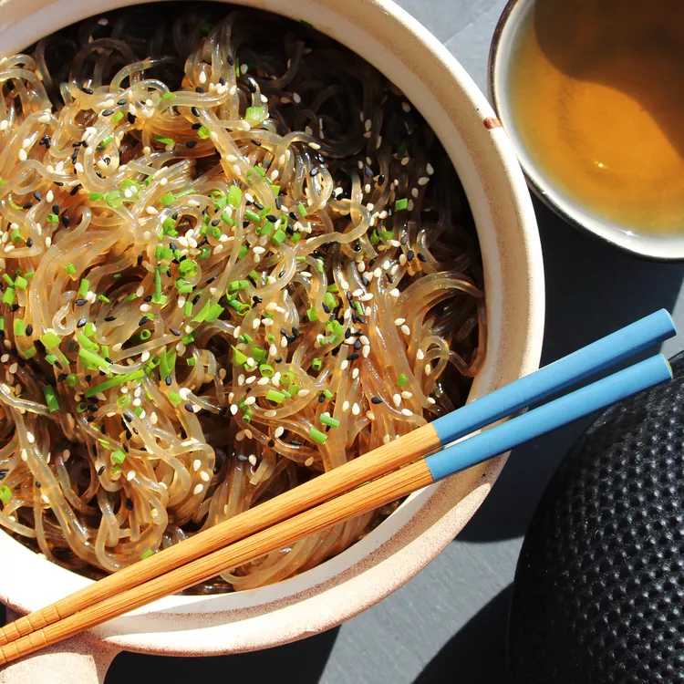

Japchae Noodles

Korean Glass Noodles
Japchae (잡채 - or chapchae) is a classic Korean stir-fried noodle dish seasoned with a sweet and savory sauce. The name japchae describes a mix of finely cut ingredients
As one of Korea's most-loved dishes, not only can you find japchae being served at small parties, fancy banquets, and special occasions like New Year's day, but it is also a staple dish enjoyed any day of the week.
In Korea, people enjoy japchae hot, warm, or even at room temperature, because it is delicious regardless of how you serve it.
Ingredients
- 1 (8 ounce) package sweet potato vermicelli (glass noodles)
- ½ cup boiling water
- ½ cup reduced-sodium soy sauce
- ¼ cup brown sugar
- 3 tablespoons vegetable oil
- 1 teaspoon toasted sesame seeds
Instructions
-
Break noodles into small pieces. Place into a deep dish and cover with hot tap water; soak for 10 minutes.
-
Meanwhile, whisk boiling water, soy sauce, and brown sugar together in a 2-cup liquid measure.
-
Drain noodles and transfer to a bowl. Pour soy mixture over top and soak for 2 minutes.
-
Heat oil in a large skillet over medium heat. Add noodles and soy mixture; cook and stir until hot, about 5 minutes.
-
Transfer noodles and sauce to serving bowls. Garnish with sesame seeds.